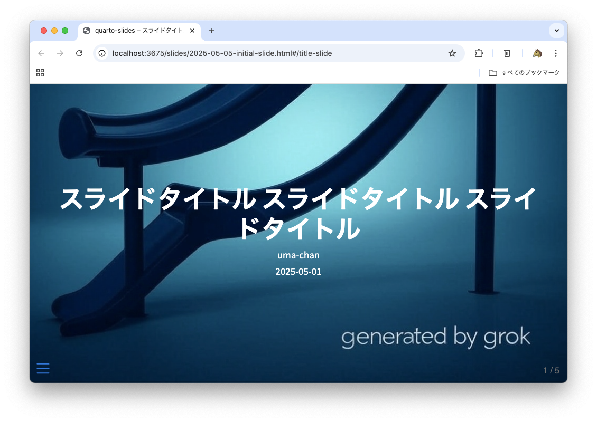
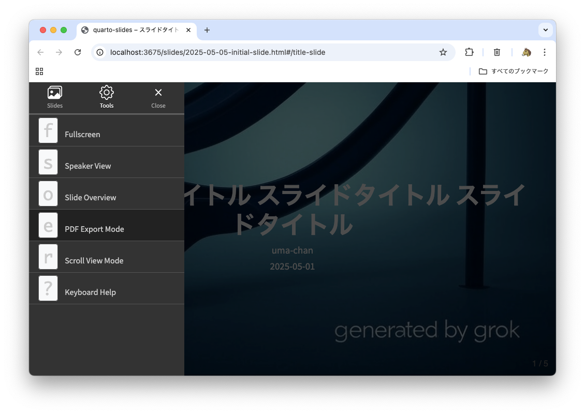

Markdown ライクな Quarto でスライドを作成して GitHub Actions で HTML 出力する
Markdown ライクな Quarto でスライドを作成して GitHub Actions で HTML 出力する方法を紹介します
この記事の内容は古くなっています。最新の情報は以下の記事を参照してください。
uv + Quarto でブログやスライドを作成して GitHub Pages で公開する (HTML エクスポートにも対応)
1. はじめに
最近 AI にスライドを生成させたいという声をよく聞くようになりましたので、私の好きな Markdown ライクなツールである Quarto でスライドを作成する方法を紹介します。
Organization のプライベートリポジトリでも気軽に使えるように GitHub Pages として公開する手順ではなく GitHub Actions で HTML 出力する方法を紹介していきます。
2. 想定読者
- GitHub や GitHub Actions の操作説明がなくても問題ない方
3. Quarto とは
An open-source scientific and technical publishing system
オープンソースの科学技術出版システムです。Pandoc をベースにしていて手軽でありつつも拡張性があり細かいところに手が届くという印象です。 上記リンクのページも Quarto で作成されていると聞くと表現の幅広さが分かると思います。
GitHub Pages でブログ・スライド・Wikiを公開することも非常に簡単にできます。私は個人ページを Quarto で作成しています。 GitHub Pages での公開方法が気になる方は以下の記事を参考にしてください。
4. この記事でやること
- Quarto 向けリポジトリを作成する
- Quarto (reveal.js) でスライドを作成する
- GitHub Actions で HTML 出力する
5. この記事でやらないこと
- 作成物を GitHub Pages として公開する
6. Quarto でスライドを作成する
では Quarto を使ってスライドを作成していきましょう！
6.1. Quarto をインストールする
Python 環境のある方は pip でインストールできます。
pip install quarto-cli公式からインストーラも提供されています。私は利用したことがないため詳細の説明は省きます。
6.2. (任意) VS Code の Quarto の拡張機能をインストールする
https://marketplace.visualstudio.com/items?itemName=quarto.quarto
Quarto では .qmd という拡張子のファイルを使用します。VS Code の場合は Quarto 拡張機能をインストールすることで編集体験が向上しますので是非検討してみてください。 ここでは誰でも再現可能な手順の説明に終始するため VS Code の Quarto 拡張機能に関する説明は省きます。
6.3. GitHub リポジトリを作成する
空のリポジトリを作ったあと以下の構成を作っていきます。
./
├── _quarto.yml
├── .github/
│ └── workflows/
│ └── deploy.yml
├── .gitignore
├── assets/
│ └── common/
│ └── title-background.jpg
├── custom.scss
├── index.qmd
└── slides/
└── 2025-05-05-initial-slide.qmd以下で各ファイルの説明をしていくので真似て作成してみてください。
6.3.1. _quarto.yml
プロジェクトの設定を記述しておくファイルです。
title-slide-attributes でタイトルスライドの背景色や画像を指定できますが不要な方は削除してください。
気になる項目は公式ドキュメント
の検索欄から調べる、もしくは上記ページを管理しているリポジトリの DeepWiki
https://deepwiki.com/quarto-dev/quarto-web
に質問するとほとんど全て解決できると思います。
_quarto.yml
project:
type: website
output-dir: "_output"
date-format: iso
website:
title: "quarto-slides"
navbar: true
search: false
format:
revealjs:
code-copy: true
scrollable: true
self-contained: true
slide-level: 3
slide-number: true
theme:
- default
# - custom.scss
width: 1920
height: 1080
title-slide-attributes:
data-background-color: "#000000"
data-background-image: "/assets/common/title-background.jpg"
data-background-size: "cover"6.3.2. .github/workflows/deploy.yml
HTML 出力させる GitHub Actions ワークフロー設定ファイルの例です。
とりあえず下記で動くので、必要に応じて色々変更してください。
.github/workflows/deploy.yml
name: Build and Deploy Quarto Website
run-name: ${{ github.event_name }} on ${{ github.ref_name }} by @${{ github.actor }}
on:
workflow_dispatch:
push:
branches:
- main
pull_request:
branches:
- main
permissions: {}
concurrency:
group: ${{ github.workflow }}-${{ github.ref }}
cancel-in-progress: true
jobs:
build-and-deploy:
name: Build and Deploy Quarto Slides
runs-on: ubuntu-24.04-arm
timeout-minutes: 5
permissions:
contents: write
steps:
- name: Check out repository
uses: actions/checkout@v4
with:
fetch-depth: 0
- name: Set up Quarto
uses: quarto-dev/quarto-actions/setup@v2
# - name: (Optional) Set up Python
# uses: actions/setup-python@v5
# - name: (Optional) Set up Python Libraries
# run: python3 -m pip install jupyter
- name: Render Quarto Website
run: |
quarto render
- name: Deploy to HTML branch
uses: JamesIves/github-pages-deploy-action@v4
with:
folder: _output
branch: html
clean: true6.3.3. .gitignore
Quarto の生成物を無駄に GitHub に push したくないので作成しておきます。
.gitignore
/.quarto/
/_output/6.3.4. assets/common/title-background.jpg
タイトルスライドの背景画像を指定するための画像ファイルです。なくても良いです。
6.3.5. custom.scss
Quarto で作成するスライドの見た目をカスタマイズするためのファイルです。名前は任意です。
ここでは一旦不要ですが編集のコツを後述しますので所定のスライドテンプレートの反映に活用してください。
6.3.6. index.qmd
Quarto のトップページを作成するためのファイルです。
リポジトリで管理するスライドが複数になったときにインデックスページとして役に立ってくれると思います。
index.qmd
---
title: "quarto-slides"
listing:
- id: "list-all"
contents:
- "slides"
sort:
- "date desc"
- "title"
format:
html:
self-contained: true
---
::: {#list-all}
:::6.4. スライドを作成する
よくある記法を記載しましたので参考にしてください。
h2 レベル ## でタイトルのみのスライドを作成します。 h3 レベル ### を区切りにスライドを分けていきます。
h3 レベル ### が区切りになっているのは _quarto.yml の以下の設定値によるものです。
slide-level: 3
スライドを左右に分割することも多いと思いますが、以下のファイルの記述を真似ることで簡単に作成できます。
slides/2025-05-05-initial-slide.qmd
---
title: スライドタイトル スライドタイトル スライドタイトル
author: uma-chan
date: 2025-05-05
---
## test
### aaaa aaaaaaaaaaaaaaa aaaaaaaaaaaaaaa aaaaaaaaaaa
:::: {.columns}
::: {.column width="50%"}
[https://example.com](https://example.com)
https://example.com
https://example.com
- bbbbbbbbbbbbbb
- ccccccccccc
1. aaaaaa
1. bbbbbb
> test test
`test`
> ```{.yaml}
> format:
> revealjs:
> # incremental: true
> # mainfont: "Noto Sans JP"
> slide-level: 3
> ```
:::
::: {.column width="50%"}
> test test
`test`
> ```{.py}
> print("Hello, world!")
> ```
:::
::::
## test
### aaaaaaaa
:::: {.columns}
::: {.column width="30%"}
| aaa | bbb | ccc |
| --- | --- | --- |
| aaa | bbb | ccc |
| aaa | bbb | ccc |
| aaa | bbb | ccc |
| aaa | bbb | ccc |
| aaa | bbb | ccc |
| aaa | bbb | ccc |
:::
::: {.column width="70%"}
画像を表示する場合はこのように記述します。

:::
::::7. 手元でプレビューする
リポジトリルートで以下のコマンドを実行することで手元でプレビューできます。
quarto preview8. 手元で HTML 出力する
手元で HTML 出力する場合は以下のコマンドを実行します。上記設定のままの場合、 _output ディレクトリ配下に HTML ファイルが格納されます。
quarto render9. GitHub Actions で HTML 出力する
前段で作成した GitHub Actions を実行することで HTML 出力できます。
記載のままの場合以下の3イベントがトリガーとなり実行されます。
- main ブランチへの push
- main ブランチへの pull request のマージ
- 手動実行
処理が成功すると htmlブランチに HTML ファイルが格納されます。
10. HTML ファイルの取り扱い
reveal.js 形式の HTML ファイルとなります。
以下のいずれかの方法で取得できます。
- 手元で
quarto renderして HTML ファイルを生成する - ローカルリポジトリを
htmlブランチに切り替えて pull する - GitHub から直接ダウンロードする
HTML ファイルを Web ブラウザで開くと以下のような表示になります。左下のハンバーガーメニューをクリックします。

複数のモードが選択できます。PDF Export Mode を選択すると PDF 印刷できる状態になります。

その他詳細は下記ページを参照してください。
https://quarto.org/docs/presentations/revealjs/presenting.html
11. スライドのテンプレートを SCSS に反映させる
スライドの配色などを SCSS で指定できます。
一度作成すると再利用できるのでやる気のある方は頑張ってみましょう。
_quarto.yml のコメントアウトを外して custom.scss を編集していくことになります。
大本になるファイルが以下の SCSS ファイルです。
https://github.com/quarto-dev/quarto-cli/blob/main/src/resources/formats/revealjs/quarto.scss
基本的にはここに登場する変数の値のうちオーバーライドしたいものを custom.scss に記載していけばよいです。
不明点がある場合は先述しましたが DeepWiki が便利なので活用できますね。
https://deepwiki.com/quarto-dev/quarto-cli
DeepWiki でなくともよいですが AI にスライド内で利用したい色や書式を提示しつつ quarto.scss や以下の themes のファイルを読み込ませて作っていけば上手く作成できると思います。
https://github.com/quarto-dev/quarto-cli/tree/main/src/resources/formats/revealjs/themes
コードブロックの配色など (正直どうでもよくて) 頭を使いたくない部分も今時の AI なら良い感じに作成してくれるのであまり苦労せず SCSS の編集をやっていけるでしょう。
一つ言及しておくとすると以下のように SCSS を記載することで h2 レベルのタイトルスライドの背景色等を変更できるはずです。
$anybgcolor: #000000;
$anyfgcolor: #ffffff;
.title-slide {
background-color: $anybgcolor !important;
color: $anyfgcolor !important;
h2 {
color: $anyfgcolor !important;
}
}基本的には SCSS の変数をオーバーライドしていく形で事足りるとは思います。
12. おわりに
ここまでリポジトリを整備できればあとはどんどん AI にスライドを生成してもらうだけですね！楽にスライドを量産していきましょう！